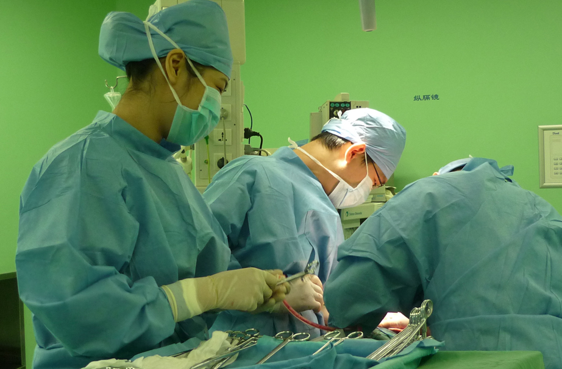
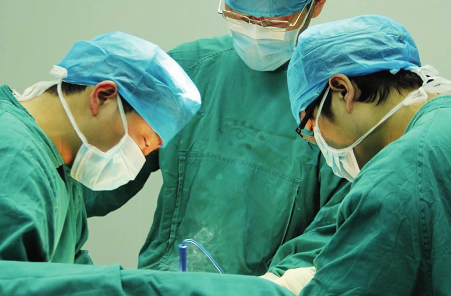
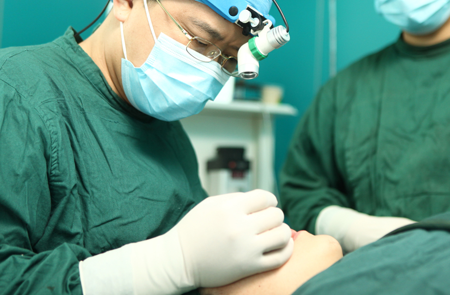
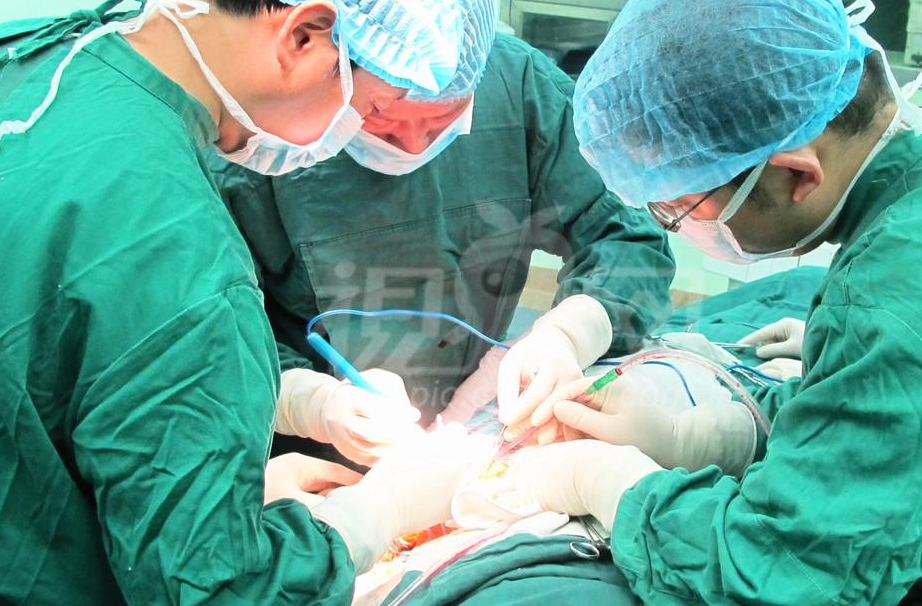
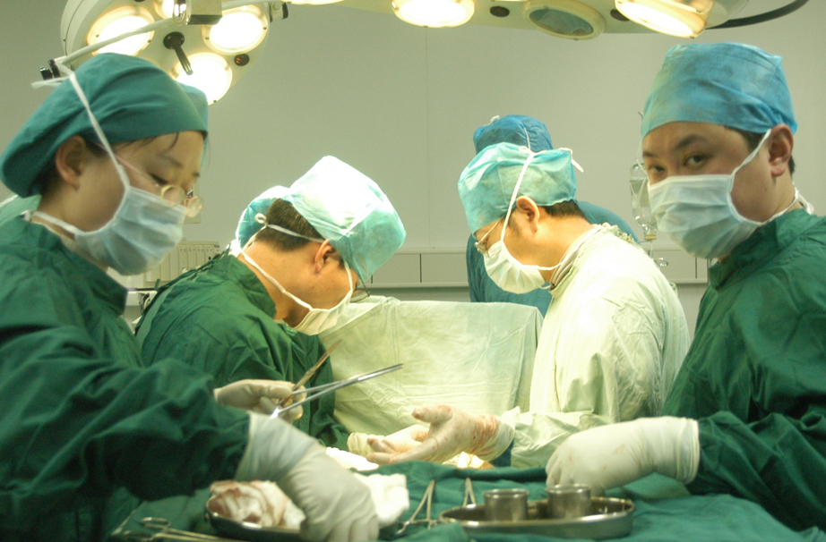

退出
张启明教授主刀：胸外科手术

李三三主刀：普外科手术
国外专家主刀：肺移植手术

王五教授：肝移植手术

李恒： 微创手术

林涛主刀：阑尾切除术
陶明：肝切除术
林丹：肠造口术

<
>
张启明医生胸外科手术
张启明医生胸外科手术
张启明医生胸外科手术
全部视频
手术名称
普 外
阑尾切除术
胆囊切除术
胆囊造口术
脓肿引流
肠造口术
开腹探查术
胃十二指肠肠吻合术
痣切除术
肝管切除术
肝切除术
疝修补术
低位食管静脉结扎
胰切除术
门腔静脉吻合术
幽门成形术
科室分类
内科
外科
骨科
妇科
儿科
五官科
医 生
李丹丹副院长
李晓光
陈成华
王阳明
李涛教授
王 青
李丹丹副院长
龙小飞
时 间
最新
一个月内
三个月内
半年内
一年以上
2017/1/7
胸外科手术
手术主刀医生：李启明教授。主要内容：以卵圆窝为中点作一与腹股沟韧带平行的斜切口，长约6cm。切开皮肤、皮下组织、浅筋膜，显露卵
2017/1/7
胸外科手术
手术主刀医生：李启明教授。主要内容：以卵圆窝为中点作一与腹股沟韧带平行的斜切口，长约6cm。切开皮肤、皮下组织、浅筋膜，显露卵
2017/1/7
胸外科手术
手术主刀医生：李启明教授。主要内容：以卵圆窝为中点作一与腹股沟韧带平行的斜切口，长约6cm。切开皮肤、皮下组织、浅筋膜，显露卵
2017/1/7
胸外科手术
手术主刀医生：李启明教授。主要内容：以卵圆窝为中点作一与腹股沟韧带平行的斜切口，长约6cm。切开皮肤、皮下组织、浅筋膜，显露卵
2017/1/7
胸外科手术
手术主刀医生：李启明教授。主要内容：以卵圆窝为中点作一与腹股沟韧带平行的斜切口，长约6cm。切开皮肤、皮下组织、浅筋膜，显露卵
2017/1/7
胸外科手术
手术主刀医生：李启明教授。主要内容：以卵圆窝为中点作一与腹股沟韧带平行的斜切口，长约6cm。切开皮肤、皮下组织、浅筋膜，显露卵
2017/1/7
胸外科手术
手术主刀医生：李启明教授。主要内容：以卵圆窝为中点作一与腹股沟韧带平行的斜切口，长约6cm。切开皮肤、皮下组织、浅筋膜，显露卵
2017/1/7
胸外科手术
手术主刀医生：李启明教授。主要内容：以卵圆窝为中点作一与腹股沟韧带平行的斜切口，长约6cm。切开皮肤、皮下组织、浅筋膜，显露卵
加载更多